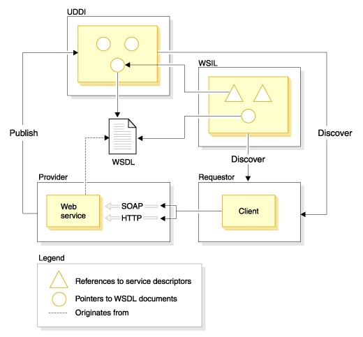

Introducción
En el amplio escenario digital donde las aplicaciones y sistemas interactúan, hay un conjunto de reglas que operan de forma “incógnita” y que permiten que todo funcione en armonía. Estos son los "Estándares de Servicios Web", mismos que hace posible la colaboración de tecnologías diversas en la World Wide Web.
El presente ensayo nos permite explorar sobre estas reglas, las cuales permiten que diferentes aplicaciones se entiendan mutuamente. Son los intérpretes que permiten que tu navegador hable con servidores, aplicaciones y servicios de una manera que todos puedan entenderse.
A lo largo y ancho del presente trabajo investigativo estaremos abordando conceptos y directrices de estándares tales como UDDI (Universal Description, Discovery and Integration), WSDL (Web Services Description Language), WSIL (Web Services Inspection Language), SOAP y WS-I (Web Services Interoperability), los que, a través de la comunicación entre sí, permiten que la información fluya de un lado a otro en el escenario digital.
En este ensayo basa su importancia, en la relevancia que tiene el entender a la tecnología detrás de la tecnología, donde estas reglas no solo son bloques de construcción técnicos, sino también los actores principales que hacen posible que las aplicaciones trabajen juntas.
Como casi todos los informes investigativos de este tipo, el presente trabajo centra su base de estudio en la investigación descriptiva, ya que nos apoyaremos en artículos científicos y foros con información disponible en la Web con respecto al tema en cuestión.
Desarrollo
Qué son los Servicios Webs
Según (Pérez, 2020) “se trata de un entorno estandarizado para distribuir la comunicación entre aplicaciones cliente y servidor en la World Wide Web”. Ir a la Fuente
En términos técnicos, un servicio web es una aplicación diseñada para establecer comunicación con algún otro programa, para eso se establecen reglas de comunicación como las direcciones para encontrar los recursos, qué acciones se pueden realizar con dichos recursos, y cómo se va a estructurar el texto que se intercambia entre ambos programas. (codigofacilito, 2018). Ir a la Fuente
Siguiendo en la línea de (codigofacilito, 2018) “Un servicio web, no hace asunciones acerca de la tecnología que usarán los clientes para consumir la información, así, bien el servidor puede estar programado con JAVA y el cliente usar JavaScript, o cualquier otro tipo de tecnología. Es por esto que se establece un formato para el texto que sea estándar, este puede ser una estructura JSON, XML, entre otros”. Ir a la Fuente
En términos prácticos, un servicio web está diseñado para intercambiar mensajes con otra aplicación, permitiéndonos enviar y recibir información. (codigofacilito, 2018) Ir a la Fuente
Estándares de Servicio Web
De acuerdo a (IBM, 2021) “Los estándares de servicios web son conjuntos de especificaciones y protocolos aceptados de manera generalizada que se utilizan para facilitar la comunicación y la interoperabilidad entre sistemas distribuidos a través de la web. Estos estándares proporcionan reglas y convenciones comunes para el intercambio de datos y la ejecución de servicios en entornos heterogéneos”. Ir a la Fuente
Los estándares siguientes desempeñan roles clave en servicios Web: UDDI (Universal Description, Discovery and Integration), WSDL (Web Services Description Language), WSIL (Web Services Inspection Language), SOAP y WS-I (Web Services Interoperability). (IBM, 2021) Ir a la Fuente
UDDI (Universal Description, Discovery and Integration)
La especificación UDDI según (IBM, 2021) “define estándares abiertos independientes de la plataforma que permiten a las empresas compartir información en un registro de empresa global, encontrar servicios en el registro y definir cómo actúan conjuntamente en Internet”. Ir a la Fuente
WSIL (Web Services Inspection Language)
WSIL es una especificación abierta basada en XML que define un método de descubrimiento de servicios distribuidos que suministra referencias a descripciones de servicio en el punto de ofertas del proveedor de servicios, especificando cómo comprobar si hay servicios Web disponibles en un sitio Web. Un documento WSIL define las ubicaciones en un sitio Web donde se pueden buscar descripciones del servicio Web. Dado que WSIL se centra en el descubrimiento de servicios distribuidos, la especificación WSIL complementa UDDI facilitando el descubrimiento de servicios que están disponibles en sitios Web que quizá no se enumeren aún en un registro UDDI. (IBM, 2021) Ir a la Fuente
WSDL (Web Services Description Language)
Del mismo modo (IBM, 2021) en el mismo artículo señala que, “WSDL es una especificación abierta basada en XML que describe las interfaces y las instancias de servicios Web en la red. Es ampliable, de modo que se pueden describir los puntos finales independientemente de los formatos de mensaje o de los protocolos de red que se utilicen para comunicarse. Las empresas pueden poner a disposición de sus servicios Web los documentos WSDL mediante UDDI, WSIL o divulgando los URL a su WSDL mediante correo electrónico o sitios Web. WSDL se describe en un tema aparte de esta documentación”. Ir a la Fuente
SOAP y WS-I (Web Services Interoperability)
SOAP es un estándar basado en XML para la transmisión de mensajes en HTTP y otros protocolos de Internet. Es un protocolo ligero para el intercambio de información en un entorno descentralizado y distribuido. Se basa en XML y consta de tres partes:
- Un sobre que define una infraestructura para describir el contenido del mensaje y cómo procesarlo.
- Un conjunto de normas de codificación para expresar instancias de tipos de datos definidos por la aplicación.
- Una convención para representar llamadas y respuestas a procedimiento remoto.
SOAP permite el enlace y la utilización de servicios Web encontrados definiendo una ruta de mensaje para el direccionamiento de mensajes. Se puede utilizar SOAP para consultar UDDI para servicios Web. (IBM, 2021) Ir a la Fuente
Relaciones entre SOAP, UDDI, WSIL y WSDL.
Un proveedor de servicios aloja un servicio Web y lo hace accesible con protocolos como SOAP/HTTP o SOAP/JMS. El servicio Web se describe mediante un documento WSDL que se almacena en el servidor del proveedor o en un depósito especial. UDDI Business Registry y sus documentos WSDL pueden hacer referencia al documento WSDL. Estos contienen punteros a los archivos WSDL del servicio Web. (IBM, 2021) Ir a la Fuente
Conclusiones
Al explorar el SOAP, UDDI, WSIL y WSDL., hemos descubierto que todos estos estándares se sincronizan de tal manera que su funcionamiento puede fluir, devolviendo de manera eficiente una respuesta adecuada a las peticiones de los usuarios. Cada estándar juega un papel importante en la simplicidad de la ejecución remota de funciones.
Este trabajo investigativo nos ha llevado más allá de los tecnicismos y nos ha permitido apreciar la importancia de estos estándares en nuestra vida digital cotidiana. Son los facilitadores que permiten que nuestras aplicaciones favoritas colaboren, compartan información y brinden servicios útiles. Son los verdaderos maestros de ceremonias detrás de la cortina digital, asegurándose de que la magia suceda sin problemas.